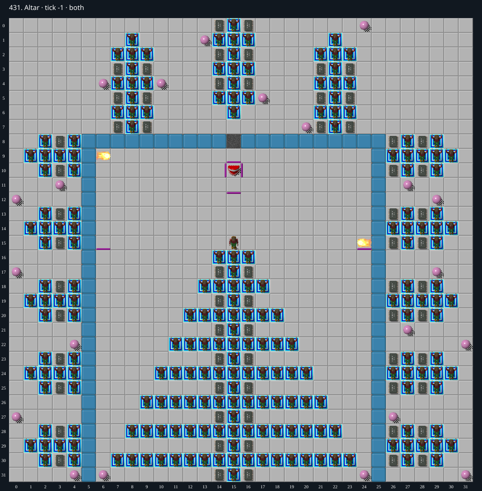

Jacques · Original Tile World MS
431. Altar
Impossibility argumentNeither DAT layer contains an Exit tile.
64 chips required · 300 second time limit
Why completion is impossible
- Both decoded layers contain zero actual Exit tiles (DAT file code 21 / MS_TILE.Exit). The 212 Exited_Chip tiles (DAT 57) are decorative solid tiles, not exits.
- The normal MS completion transition requires Chip alive with an actual Exit under Chip after an arrival. Collecting all 64 chips alone does not complete a level.
- No game operation available in this level creates an Exit from another tile. There are no cloners, blocks, teleports, or buttons. Thus the exit-absence invariant holds for every play.
Inspect both layers
The main map shows the initial runtime state. Switch to the buried layer to inspect hidden terrain and items. Hover coordinates are also available in the downloadable SVG.


Recorded checks and attempts
- DAT two-layer inventory: Exact DAT metadata/layers decoded; initial production runtime loaded and rendered with repository sprites.
Scope and limitations
- Proof concerns ordinary legal play; cheats/editor changes excluded.
Evidence
- Structured report
- web/src/ruleset-ms/impl/builtinLevelRegistration.ts
- legacy_c/mslogic.c:1002-1011 (bounded cardinal movement)
- legacy_c/mslogic.c:1034-1042 (socket/key requirements)
- legacy_c/mslogic.c:1616-1736 (arrival/terrain effects)
- legacy_c/mslogic.c:1825-1832 (exit completion)
- web/src/ruleset-ms/impl/chipMovement.ts:104-108 (TypeScript completion)